藏宝图与资源图共用一套「激活地图物品」机制：解码后绑定角色、同时只能持有一个、按流程徒步/导航/揭示、完成或放弃后才能操作下一张。30 分钟（传说图 60 分钟）内未完成将自动过期。
第一部分 · 藏宝图 Treasure Maps
未解码地图 Undecoded Maps
- 未解码藏宝图可与同等级的其他未解码藏宝图堆叠。
- 已解码但尚未生成宝箱的藏宝图，在补丁上线时统一回退为未解码（历史迁移说明）。
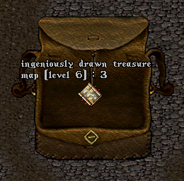
藏宝图书 Treasure Map Tomes
- 藏宝图书只存储未解码藏宝图。
- 藏宝图书内已解码的藏宝图在补丁上线时统一回退为未解码（历史迁移说明）。
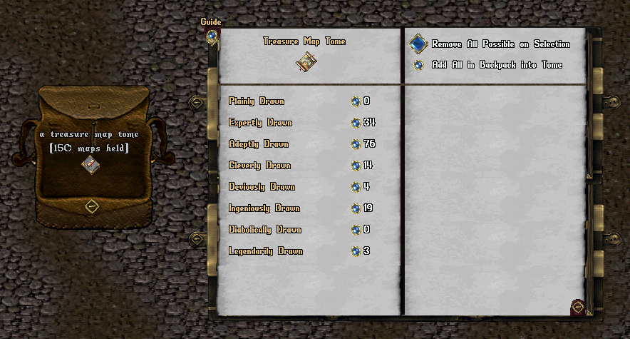
- 挖取藏宝图无需铲子 Shovels。
- 藏宝图通过藏宝图菜单管理：在背包中双击藏宝图即可打开。
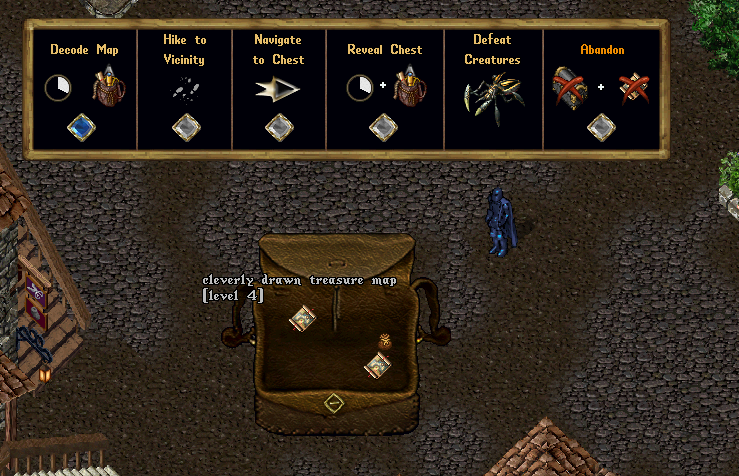
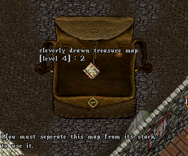
制图技能与藏宝图操作 Cartography Skill and Treasure Map Actions
- 藏宝图宝箱不需要开锁 Lockpicking 技能，也不从采矿 Mining 技能获得定位宝箱的益处。
- 藏宝图提供多个可执行的「操作」，其中数项需具备足够的已学制图技能 printed Cartography skill（解码地图 Decode Map、揭示宝箱 Reveal Chest）。
- 完成藏宝图无需铲子；在成功执行解码地图、揭示宝箱等操作时，须消耗背包中的探险者包。
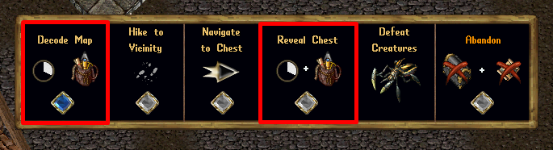
藏宝图宝箱各等级最低制图技能要求
- 粗略绘制（1 级 Plainly Drawn）： 制图 85
- 熟练绘制（2 级 Expertly Drawn）： 制图 90
- ** adept 绘制（3 级 Adeptly Drawn）：** 制图 95
- 巧妙绘制（4 级 Cleverly Drawn）： 制图 100
- 诡诈绘制（5 级 Deviously Drawn）： 制图 105
- 精巧绘制（6 级 Ingeniously Drawn）： 制图 110
- 恶魔绘制（7 级 Diabolically Drawn）： 制图 115
- 传说绘制（8 级 / 传说图 Lore Map）： 制图 120
解码地图 Decode Map
- 开启藏宝图的第一步是解码。
- 点击藏宝图菜单中的「解码地图」按钮即可解码。
- 解码需玩家静止 15 秒，完成时从背包消耗 1 个探险者包。
- 解码过程中若移动，操作取消。
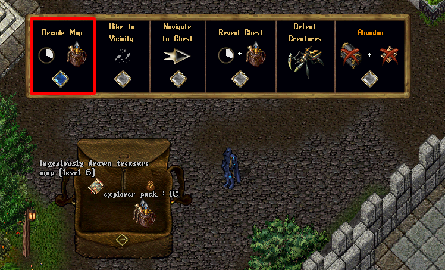
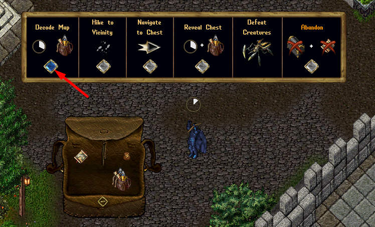
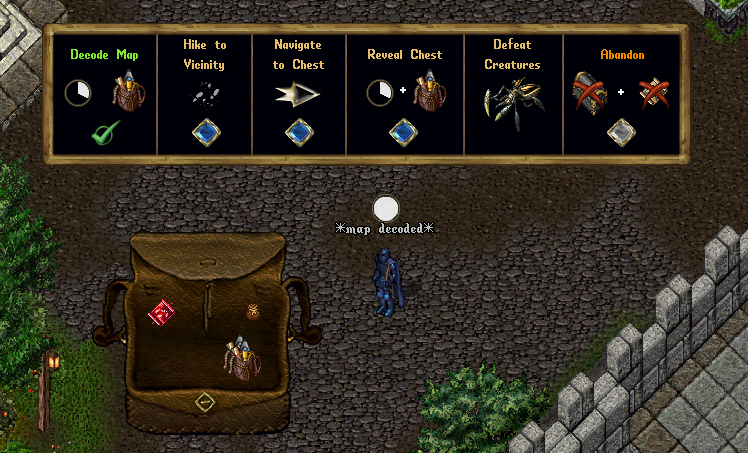
激活地图物品 Active Map Item
- 解码后，藏宝图成为「激活地图物品」（跨 OutlandsID，即所有角色与账号共享此状态）。
- 激活地图物品呈红色 Red Hue、祝福 Blessed，并绑定到解码它的角色。
- 玩家同时只能持有 1 个激活地图物品（含藏宝图与各类资源图：钓鱼/伐木/矿石/剥皮）。
- 绑定到 OutlandsID 上其他角色的藏宝图无法使用。
- 必须先完成或放弃当前激活地图物品，才能解码或操作其他地图。
- 单击激活藏宝图可查看过期剩余时间与绑定角色。
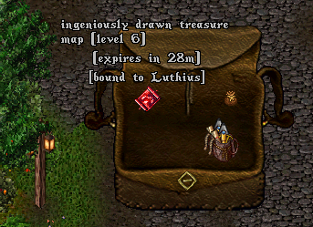
藏宝图过期 Treasure Map Expiration
- 藏宝图激活后，1–7 级地图须在 30 分钟内完成、8 级（传说图）60 分钟内完成，否则自动过期并转为放弃 Abandoned。
- 藏宝图被放弃或过期时，连同其宝箱与生成的生物一并删除。
徒步至附近 Hike to Vicinity
- 藏宝图宝箱位置不再提供视觉预览（地图弹出）。
- 须点击「徒步至附近」按钮，徒步前往宝箱位置附近。
- 徒步至附近适用地图集徒步的所有正常限制。
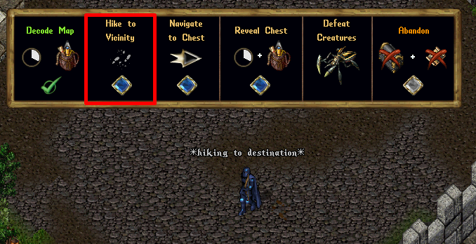
导航至宝箱 Navigate to Chest
- 点击「导航至宝箱」按钮会显示指向宝箱位置的追踪箭头。
- 该追踪箭头不显示目标坐标与距离（与常规追踪箭头不同）。
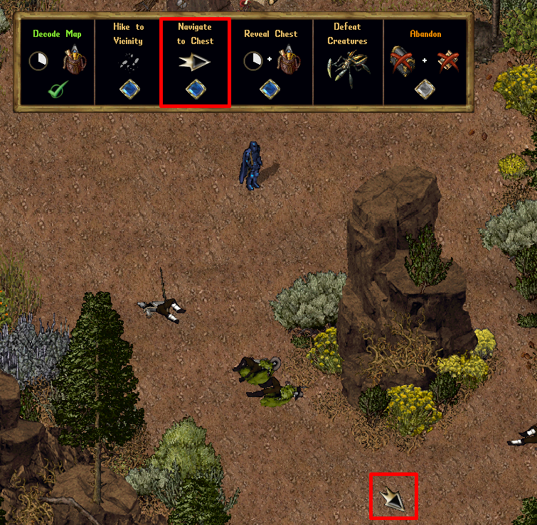
揭示宝箱 Reveal Chest
- 点击藏宝图菜单中的「揭示宝箱」按钮可尝试揭示宝箱。
- 揭示需静止 15 秒，完成时从背包消耗 1 个探险者包。
- 过程中若移动，操作取消。
- 须位于宝箱位置 3 格内才能成功揭示。
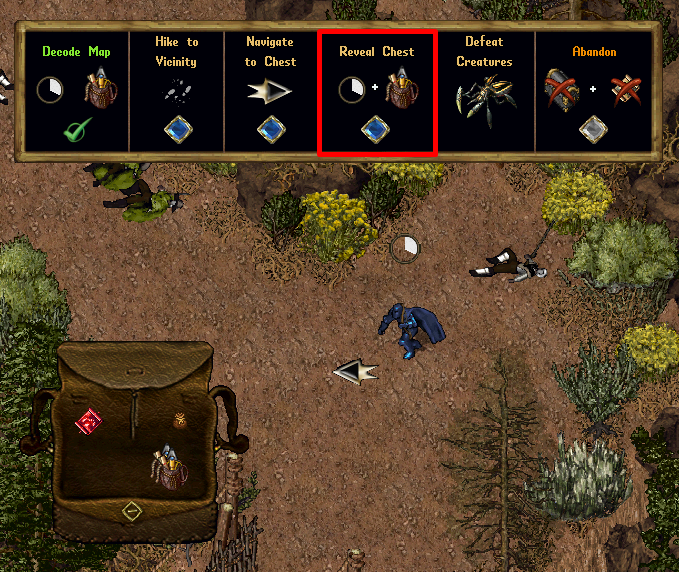
击败生物 Defeat Creatures
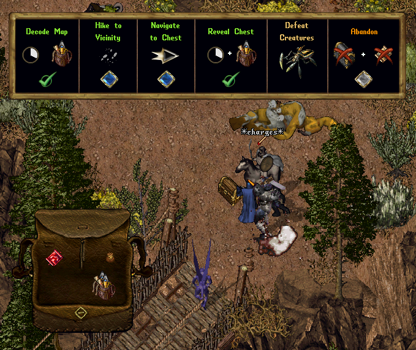
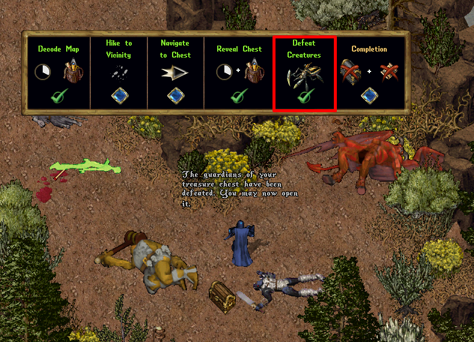
宝箱访问、战利品与奖励 Treasure Chest Access, Loot, and Rewards
- 所有生成生物被击败后，可双击宝箱打开，生成战利品并改变宝箱外观。
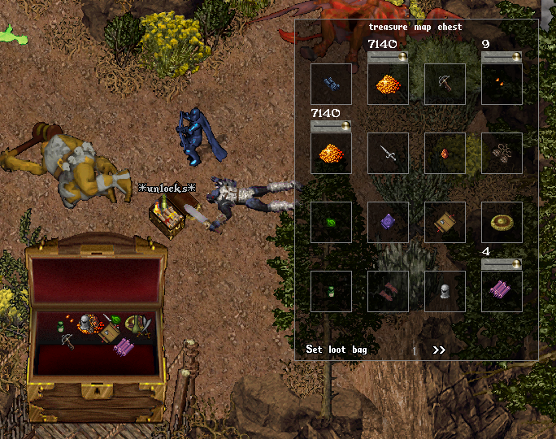
独占期 Exclusivity Period
- 击败生成生物后 2 分钟内，仅所有者可打开宝箱。
- 此期间其他玩家尝试打开会收到系统消息，告知剩余可开启时间。
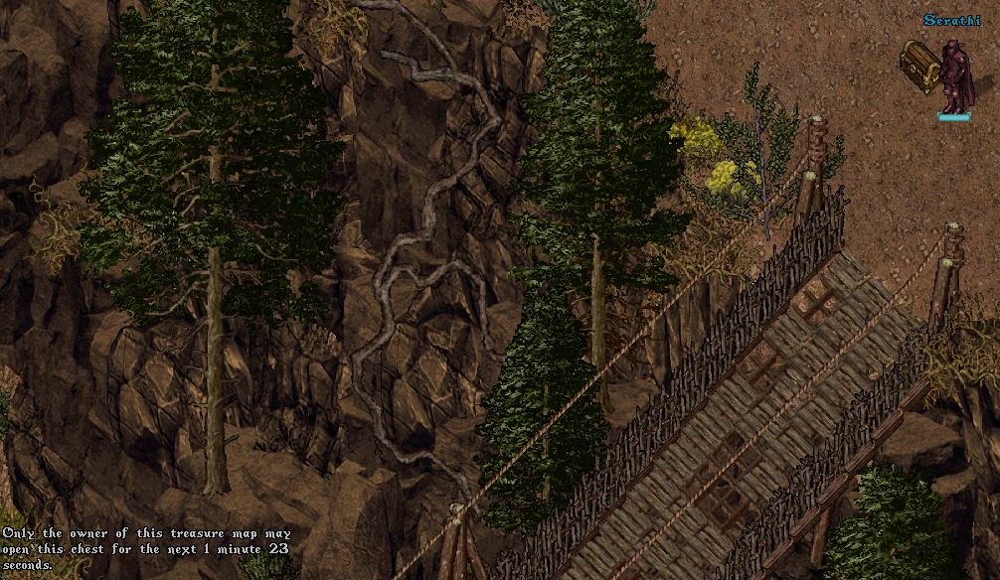
打开宝箱 Opening Treasure Chest
- 首位开箱玩家获得经验，其加成（元素、精通链、公会恩惠等）决定宝箱战利品的调整。
- 若所有者在开箱时存活且位于宝箱 18 格内，则记入成就 Achievements、公会任务 Society Jobs、服务器排名 Server Rank。
其他玩家 Other Players
- 宝箱打开后，所有玩家均可访问。
- 但与所有者不在同一公会、队伍或联盟的玩家，打开宝箱属犯罪行为 criminal。
放弃 Abandon
- 点击藏宝图菜单中的「放弃」按钮（需三次点击确认）可放弃激活藏宝图。
- 放弃将删除藏宝图、宝箱及其生成的生物。
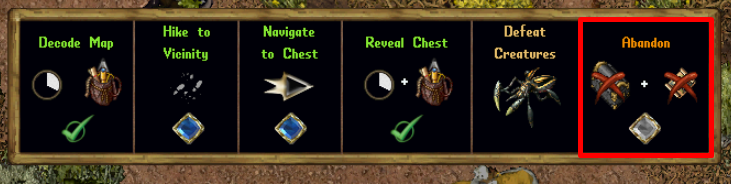
完成 Complete
- 击败生成生物并拾取宝箱后，点击「完成 Completion」按钮（需双击确认）即可删除藏宝图与宝箱。
- 激活藏宝图须放弃/过期或完成后，才能操作其他藏宝图。
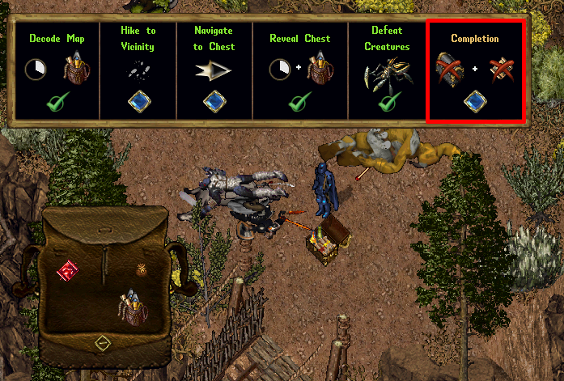
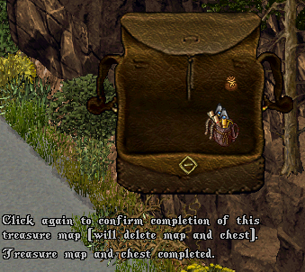
玩家将藏宝图标为「已完成」，地图随即被删除。
玩家商店 Player Vendors
- 仅未解码藏宝图可上架玩家商店 Player Vendors 出售。
客户端 / Razor
- 禁止使用客户端/Razor 向藏宝图菜单发送脚本化的菜单/Gump 响应（防自动化）。
第二部分 · 资源图 Resource Maps
改版 Overhaul
- 资源图（钓鱼、伐木、矿石、剥皮四类）与藏宝图采用一致的交互处理。
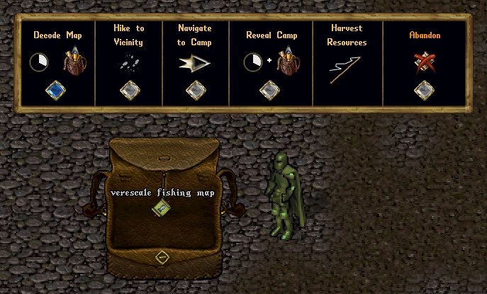
图形与色相 Graphics and Hues
- 四类资源图拥有各自的新图形，并采用对应资源的色相。
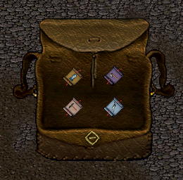
未解码地图 Undecoded Maps
- 未解码资源图可与同类型、同等级的其他未解码资源图堆叠（补丁前部分采集的地图除外，其呈非彩色色相）。
- 补丁上线时已解码的资源图统一回退为未解码（历史迁移说明）。
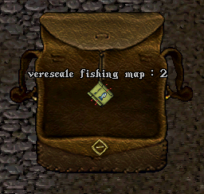
现有部分采集地图 Existing Partially Harvested Maps
补丁上线时已部分采集的资源图按以下规则处理（历史迁移说明）：
- 回退为未解码
- 具有非彩色色相（而非新资源色相），以表明其为部分采集
- 不可堆叠
- 不能加入资源书
- 不能上架玩家商店出售
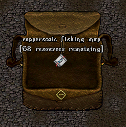
新资源图 New Resource Maps
- 补丁后新生成的资源图，其可采集总资源量默认值为固定值（旧版会在该值 −50% 至 +50% 间随机）。
地图资源总量如下：
- 暗铜 / 暗木 / 暗皮 / 暗鳞： 180 资源
- 影铁 / 影木 / 影皮 / 影鳞： 165 资源
- 红铜木 / 红铜 / 红铜皮 / 红铜鳞： 150 资源
- 青铜 / 青铜木 / 青铜皮 / 青铜鳞： 135 资源
- 金 / 金木 / 金皮 / 金鳞： 120 资源
- 银长石 / 玫瑰木 / 玫瑰皮 / 玫瑰鳞： 105 资源
- 维瑞 / 维木 / 维皮 / 维鳞： 90 资源
- 瓦洛里 / 瓦木 / 瓦皮 / 瓦鳞： 75 资源
- 阿瓦里 / 阿瓦木 / 阿瓦皮 / 阿瓦鳞： 60 资源
钓鱼图 Fishing Maps
- 钓鱼图取消「剩余抛竿次数 Casts Remaining」，与伐木/矿石/剥皮图一致：总剩余资源归零时完成。
- 钓鱼图每次采集操作必定获得资源（木板、矿石或皮革中随机），且不会「失败」。
- 水族箱鱼 Aquarium Fish 作为额外战利品出现，不取代资源获取。
- 钓鱼图采集操作不再产出基础鱼 Basic Fish 或特殊鱼 Special Fish。
- 资源图通过资源图菜单管理：在背包中双击资源图即可打开。
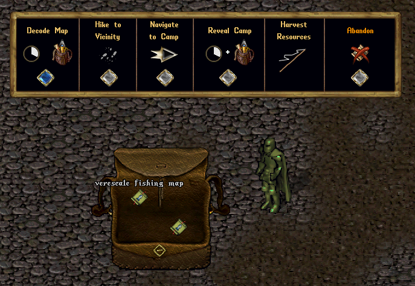
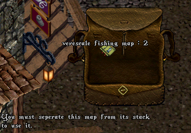
技能要求与地图操作 Skill Requirements and Map Actions
- 资源图不从采矿技能获得定位营地位置 Camp Locations 的益处。
- 资源图提供多个可执行的「操作」，其中数项需具备足够的有效采集技能（含元素/链接等采集加成）才能完成（解码地图、揭示营地）。
- 执行解码地图、揭示营地等操作时须消耗背包中的探险者包。
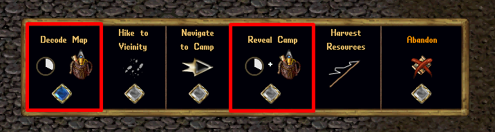
各地图类型最低有效采集技能要求
钓鱼图 Fishing Map
- 暗鳞 Dullscale：钓鱼 65
- 影鳞 Shadowscale：钓鱼 70
- 红铜鳞 Copperscale：钓鱼 75
- 青铜鳞 Bronzescale：钓鱼 80
- 金鳞 Goldenscale：钓鱼 85
- 玫瑰鳞 Rosescale：钓鱼 90
- 维鳞 Verescale：钓鱼 95
- 瓦鳞 Valescale：钓鱼 99
- 阿瓦鳞 Avarscale：钓鱼 110
伐木图 Lumber Map
- 暗木 Dullwood：伐木 65
- 影木 Shadowwood：伐木 70
- 红铜木 Copperwood：伐木 75
- 青铜木 Bronzewood：伐木 80
- 金木 Goldenwood：伐木 85
- 玫瑰木 Rosewood：伐木 90
- 维木 Verewood：伐木 95
- 瓦木 Valewood：伐木 99
- 阿瓦木 Avarwood：伐木 110
矿石图 Ore Map
- 暗铜 Dull Copper：采矿 65
- 影铁 Shadow Iron：采矿 70
- 红铜 Copper：采矿 75
- 青铜 Bronze：采矿 80
- 金 Gold：采矿 85
- 银长石 Agapite：采矿 90
- 维瑞 Verite：采矿 95
- 瓦洛里 Valorite：采矿 99
- 阿瓦里 Avarite：采矿 110
剥皮图 Skinning Map
- 暗皮 Dullhide：法医鉴定 Forensic Eval 65
- 影皮 Shadowhide：法医鉴定 70
- 红铜皮 Copperhide：法医鉴定 75
- 青铜皮 Bronzehide：法医鉴定 80
- 金皮 Goldenhide：法医鉴定 85
- 玫瑰皮 Rosehide：法医鉴定 90
- 维皮 Verehide：法医鉴定 95
- 瓦皮 Valehide：法医鉴定 99
- 阿瓦皮 Avarhide：法医鉴定 110
解码地图 Decode Map
- 开启资源图的第一步是解码：点击资源图菜单中的「解码地图」按钮。
- 解码需静止 15 秒，完成时从背包消耗 1 个探险者包。
- 过程中若移动，操作取消。
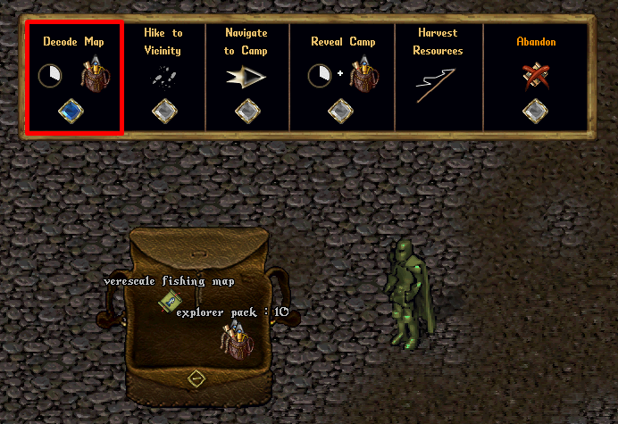
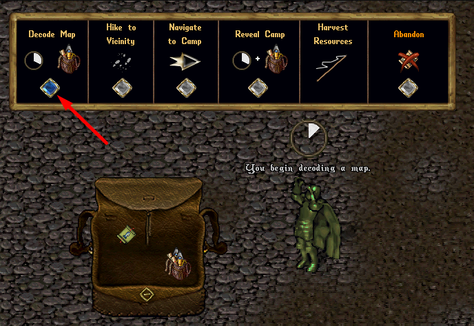
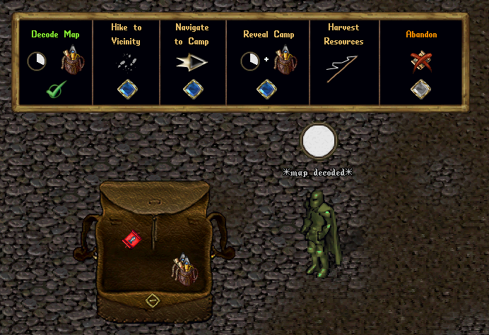
激活地图物品 Active Map Item
- 解码后，资源图成为「激活地图物品」（跨 OutlandsID），呈红色、祝福，并绑定到解码角色。
- 同时只能持有 1 个激活地图物品（含藏宝图与资源图）；绑定到其他角色的图无法使用。
- 须先完成或放弃，才能操作其他地图。
- 单击激活资源图可查看过期剩余时间与绑定角色。
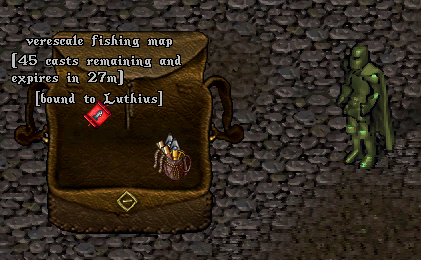
地图过期 Map Expiration
- 资源图激活后须在 30 分钟内完成，否则自动过期并转为放弃（连同已创建的资源营地）。
徒步至附近 Hike to Vicinity
- 资源图位置不再提供视觉预览。
- 须点击「徒步至附近」按钮徒步前往营地位置附近；适用地图集徒步的所有正常限制。
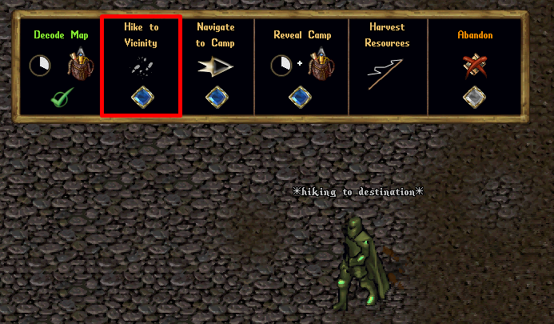
导航至营地 Navigate to Camp
- 点击「导航至营地」按钮显示指向营地的追踪箭头，不显示坐标与距离。
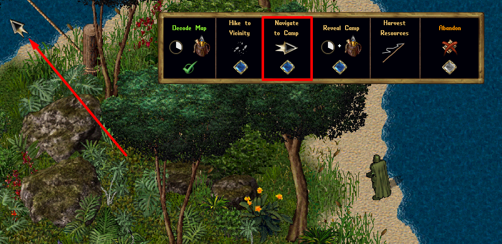
揭示营地 Reveal Camp
- 点击资源图菜单中的「揭示营地」按钮尝试揭示：需静止 15 秒、消耗 1 个探险者包，并在营地位置 3 格内才能成功。
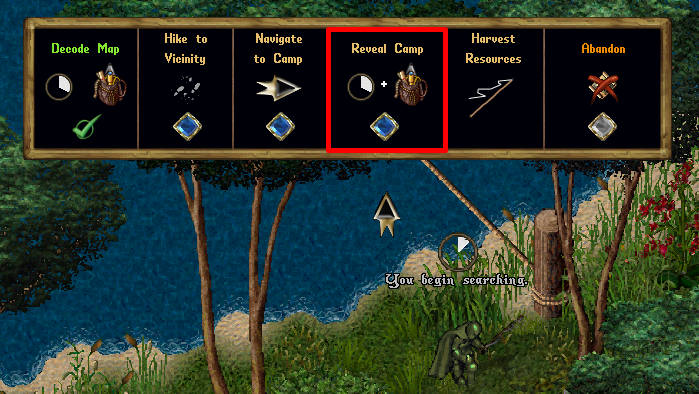
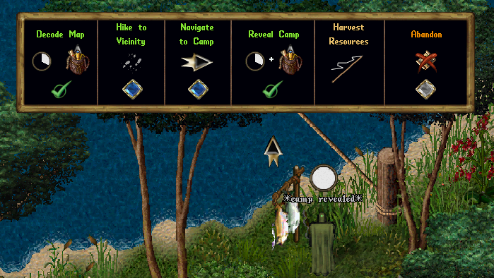
采集资源 Harvest Resources
- 揭示营地后，可用正常采集操作（双击采集工具或「智能采集 Smart Harvesting」）采集资源。
- 须在资源营地 3 格内采集。
- 资源营地所有采集操作耗时 2 秒（含钓鱼）。
放弃 Abandon
- 点击资源图菜单中的「放弃」按钮（需三次点击确认）放弃激活资源图，删除资源图及其营地（若已揭示）。
- 生成的资源营地无法「拆除 Demolish」，须用放弃机制提前结束。
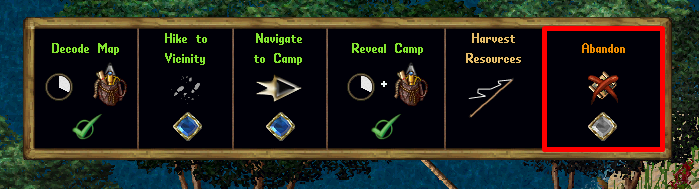
完成 Completion
- 采集完所有资源后，资源图自动完成并删除，资源营地消失。
- 激活地图物品（藏宝或资源图）须放弃/过期或完成后，才能操作其他地图。
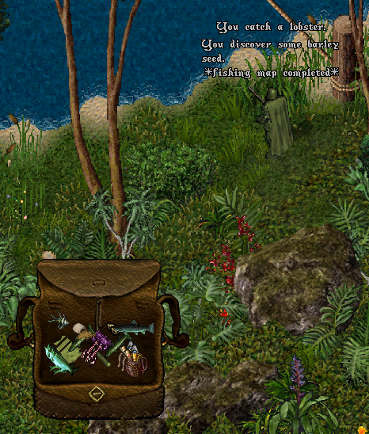
资源图书 Resource Map Tomes
- 资源图书只存储未解码资源图。
- 补丁上线时资源图书内已解码资源图统一回退为未解码（历史迁移说明）。
- 补丁上线时已解码但部分采集的存储资源图，合并剩余资源并（取整）调整所存未解码地图数量（历史迁移说明）。
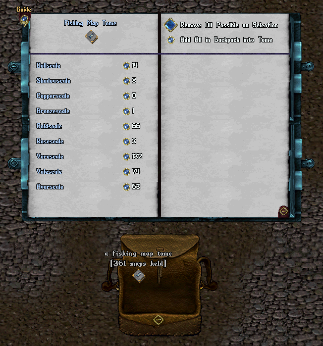
客户端 / Razor
- 禁止使用客户端/Razor 向资源图菜单发送脚本化响应（防自动化）。